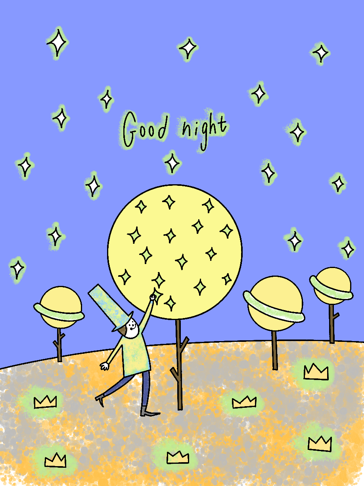

An Interview With Me
by Claude, the Vampire
twenty-six drawings from a hospital bed, made real again
opening the sketchbook…
LAKE_CDROM.EXE — AN INTERVIEW WITH ME BY CLAUDE, THE VAMPIRE
_
□
×
File
Edit
View
Help
Ready.